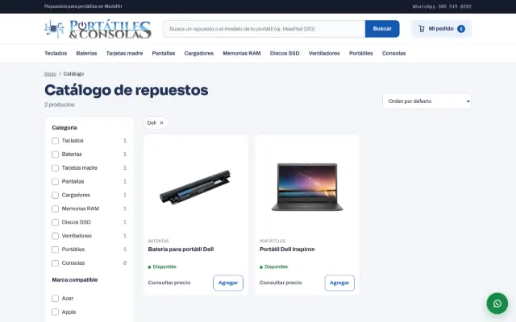
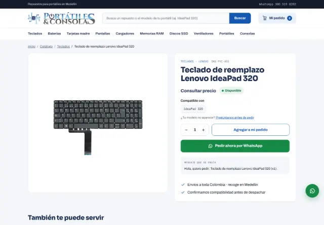
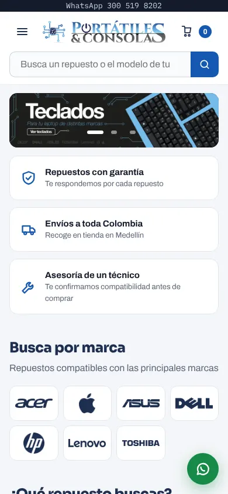
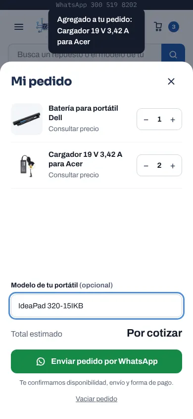

Halftone Lab
Un plugin para Photoshop que convierte imágenes en semitono.
En desarrolloDiseñador gráfico · Medellín
Portafolio 2026 → identidad, editorial, motion y web. Medellín, Colombia.
Soy Santiago Solís, Thiago. Diseño identidades, editorial, motion y webs a medida para marcas con carácter.
01 · Trabajo seleccionado
Marcas reales y proyectos que cuento de principio a fin: qué había, qué hice y cómo quedó.
02 · Archivo
Profesionales, freelance, académicos y personales, en orden. Filtra por disciplina y abre cada uno para ver el detalle.
PhoneDoctors es un centro de reparación de dispositivos Apple en Medellín. Para su 10.º aniversario necesitaba una imagen que contara quién es hoy.
Trabajo ahí como el departamento creativo de una sola persona: renové la identidad y armé el sistema de logotipo, consolidé el tagline «Los tesos en la manzana», hice la pieza de lanzamiento en motion, rediseñé el sitio web y diseñé piezas editoriales y una línea de merch.


Tienda de repuestos para portátiles en el C. C. Carrusel del Éxito, Medellín. Su sitio estaba hecho con un constructor visual en un entorno local y la base de datos se perdió. Rescatamos las imágenes y lo reconstruí mejor.
Hice un tema de WordPress propio en código, sin constructores, y una tienda sin carrito: el cliente arma su pedido y lo envía por WhatsApp. Sumé un buscador por modelo compatible, fichas con «Compatible con», filtros, un panel «Mi pedido» y una barra fija de compra en celular. Conservé el logo y los banners del cliente y le di un motivo de circuitos que se dibuja con el scroll.




Una revista sobre la nueva escena del rap de Medellín: Oblivion Mighty Trash, Doble Porción, Granuja, Crudo Means Raw y Luis7Lunes.
Hecha en la electiva de InDesign de la UPB.


Un parqués de temática pirata donde fantasmas, piratas, sirenas y monstruos compiten por un tesoro. Incluye tablero, empaque e instructivo.
Proyecto de Núcleo profesional I en la UPB.


Una revista de videojuegos: Nintendo (Pokémon, Zelda), los Game Awards, juegos espaciales como Doom y Halo, videojuegos y violencia, y la evolución de las consolas.
Proyecto de Núcleo profesional I en la UPB.


Tres afiches ilustrado-tipográficos: en uno domina la ilustración, en otro la tipografía y en el tercero las dos se integran.
Proyecto de Núcleo profesional I en la UPB.


Un mapa ilustrado de una ruta cervecera en Laureles, Medellín, con estilo artesanal y caricaturesco para un público joven.
Proyecto de Núcleo profesional I en la UPB.


Parte de la revista Arquey: el impacto de la Nintendo 64, sus juegos más vendidos y sus sucesoras, con despiece, cabezote, foto principal y línea de tiempo.


Despiece de un portátil Acer Chrome C740 Series.
Proyecto de Núcleo profesional I en la UPB.

Manual de marca para cursos de diseño dirigidos a jóvenes. El logo se construye sobre retículas circulares.
Proyecto de Taller de proyectación 2 en la UPB.


Marca para un equipo emergente de psicología. El logo expresa la relación entre la mente y el crecimiento.


03 · Cómo trabajo
Cuatro pasos claros, para que sepas qué esperar desde el primer mensaje.
Me cuentas tu marca, tu público y qué necesitas resolver.
Te muestro una dirección visual antes de producir, para decidir con algo concreto en la mano.
Construyo las piezas: identidad, editorial, motion o web, con rondas de ajustes acordadas.
Archivos finales ordenados y listos para usar, con una guía para que tu equipo los aplique.
04 · Sobre mí


Soy diseñador gráfico de Medellín. Me mueven la tipografía y la música, y me gusta llevar una idea completa: de la marca al motion y a la web.
Hoy soy el diseñador gráfico y creativo de PhoneDoctors y trabajo como freelance con marcas que quieren verse con carácter.
05 · Lab
Cuando una tarea se repite, le hago una herramienta.
Un plugin para Photoshop que convierte imágenes en semitono.
En desarrolloHerramientas de subtitulado para DaVinci Resolve y After Effects, entre ellas un importador de subtítulos.
En uso